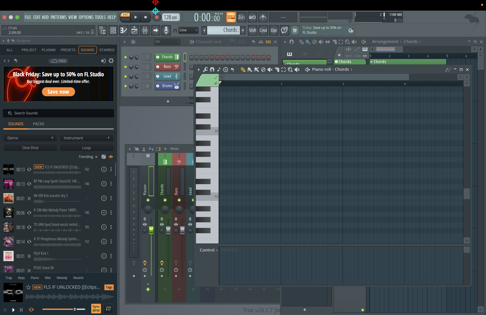

Where is the tempo control can you point me
Cyan: first prediction. Red: final prediction.

{
"instruction": "Where is the tempo control can you point me",
"image_width": 1512,
"image_height": 982,
"point": {
"x": 483.5,
"y": 5.355
},
"strategy": "panel",
"model": "/Users/harrif/.cache/huggingface/hub/models--ggml-org--gemma-4-E2B-it-GGUF/snapshots/a1dac71d3ab220618f5a7573a52acdc4baf3ae3b/gemma-4-E2B-it-Q8_0.gguf",
"calls": [
{
"point": {
"x": 483.84,
"y": 34.37
},
"raw_response": "{\n \"visible\": true,\n \"panel\": \"Transport Bar\",\n \"entity\": \"Tempo Display\",\n \"control\": \"BPM Display (128.00)\",\n \"evidence\": \"The numerical display showing the current tempo (BPM) is visible on the top left of the screen.\",\n \"region\": {\n \"left\": 240,\n \"top\": 15,\n \"right\": 400,\n \"bottom\": 55\n },\n \"anchor\": null,\n \"point\": {\n \"x\": 320,\n \"y\": 35\n }\n}",
"latency_seconds": 13.967077334003989,
"usage": {
"completion_tokens": 482,
"prompt_tokens": 910,
"total_tokens": 1392,
"completion_tokens_details": null,
"prompt_tokens_details": {
"audio_tokens": null,
"cache_write_tokens": null,
"cached_tokens": 0
}
},
"stage": "panel_plan",
"prompt": "Locate the requested visible FL Studio control in this 1512x982 screenshot. Use coordinates from 0 to 1000 relative to the image width/height, measured from the top-left.\nInstruction: Where is the tempo control can you point me\nUse only visible evidence. Preserve the exact named channel, track or plugin; do not substitute Drums for Snare or assume a hidden target is visible.\nDistinguish Channel Rack, Mixer, Playlist, Piano roll, Browser, toolbar, plugin windows, dialogs and menus. Match the requested function and entity.\nIdentify the relevant panel and exact named entity before predicting the control. Choose a region that retains its label/header and adjacent controls, not a tight crop of the point. Use visible=false if the requested target cannot be identified; never substitute a different entity. Return only JSON with keys visible (boolean), panel, entity, control, evidence (short visible facts), region, anchor, point. region and anchor use {left,top,right,bottom}; point uses {x,y}. anchor is the visible entity label/header box, or null if unnecessary. For visible=false, region, anchor and point must all be null.",
"image_sizes": [
[
1512,
982
]
],
"image_hashes": [
"2bc3879815148c9e67fa7b86d8edfeaf89701f188b6a7a2e88aad52ebfa4c6a1"
],
"finish_reason": "stop",
"error": null
},
{
"point": {
"x": 269.0,
"y": 8.71
},
"raw_response": "```json\n{\"x\":500,\"y\":65}\n```",
"latency_seconds": 15.599421541992342,
"usage": {
"completion_tokens": 671,
"prompt_tokens": 281,
"total_tokens": 952,
"completion_tokens_details": null,
"prompt_tokens_details": {
"audio_tokens": null,
"cache_write_tokens": null,
"cached_tokens": 0
}
},
"stage": "panel_localize",
"prompt": "Locate the requested control in this 538x134 crop. Use coordinates from 0 to 1000 relative to the image width/height, measured from the top-left. Coordinates refer ONLY to this crop. Instruction: Where is the tempo control can you point me\nUse only visible evidence. Preserve the exact named channel, track or plugin; do not substitute Drums for Snare or assume a hidden target is visible.\nDistinguish Channel Rack, Mixer, Playlist, Piano roll, Browser, toolbar, plugin windows, dialogs and menus. Match the requested function and entity.\nProposed context (verify visually): panel=Transport Bar; entity=Tempo Display; control=BPM Display (128.00). Return only {\"x\":number,\"y\":number}, or {\"visible\":false} if the exact target is absent.",
"image_sizes": [
[
538,
134
]
],
"image_hashes": [
"23b475b771e1486a02752f543d971fd74b252e542c60cf043176bcf9d8742c2c"
],
"finish_reason": "stop",
"error": null
}
],
"latency_seconds": 29.609642750001512,
"status": "ok",
"metadata": {
"coordinate_space": "normalized_1000",
"knowledge_version": "fl-manual-v1",
"knowledge_sources": [
"https://www.image-line.com/fl-studio-learning/fl-studio-online-manual/html/channelrack.htm",
"https://www.image-line.com/fl-studio-learning/fl-studio-online-manual/html/mixer.htm"
],
"knowledge": "Use only visible evidence. Preserve the exact named channel, track or plugin; do not substitute Drums for Snare or assume a hidden target is visible.\nDistinguish Channel Rack, Mixer, Playlist, Piano roll, Browser, toolbar, plugin windows, dialogs and menus. Match the requested function and entity.",
"plan": {
"visible": true,
"panel": "Transport Bar",
"entity": "Tempo Display",
"control": "BPM Display (128.00)",
"evidence": "The numerical display showing the current tempo (BPM) is visible on the top left of the screen.",
"region": {
"left": 240.0,
"top": 15.0,
"right": 400.0,
"bottom": 55.0
},
"anchor": null,
"point": {
"x": 320.0,
"y": 35.0
}
},
"crop": {
"bounds": [
349,
1,
618,
68
],
"output_size": [
538,
134
],
"scale": 2.0
},
"candidates": {
"initial": {
"x": 483.84,
"y": 34.37
},
"refined": {
"x": 483.5,
"y": 5.355
}
}
}
}